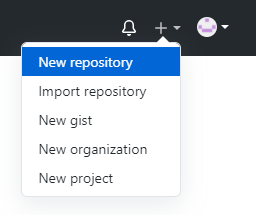
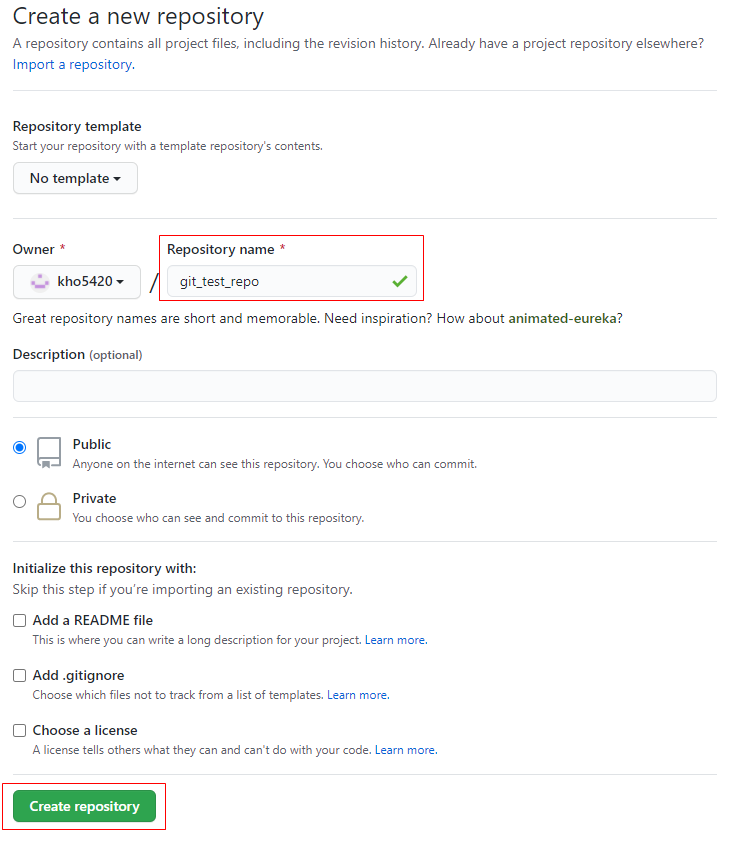
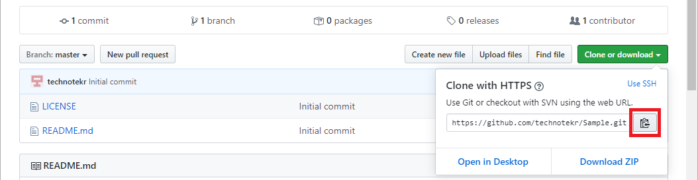
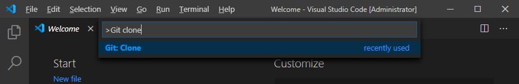
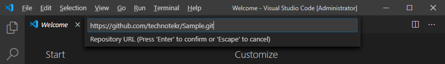
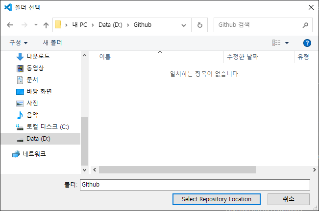

- 깃헙 작업 순서
- 회원가입
- 로그인
- 로그인 프로필 좌측 "+"버튼의 new repository 클릭
- repository name 내가 작성하기
- initialize this repository with a readme 체크 하기
- create repository 버튼 클릭
- add file -> upload files 버튼 클릭
- 내 컴퓨터의 작업 폴더 속 파일들 드래그하여 모두 업로드하기
- commit changes 바로 아래 빈칸: 보관하는 파일들 설명 메모란 = 버젼관리
- commit changes 버튼 클릭 = 저장
- 업로드한 파일을 이용해서 웹서버를 무료로 이용할 수 있음.
- settings 클릭
- 스크롤 내리다 보면 GitHub Pages란 있음
- 그 문단 속 Source의 설정을 none-> Main branch(과거엔master branch)로 변경
- 그러면 your site is published at : 사이트 주소 를 알려준다.
- 알려준 사이트로 바로 접속이 될때도 있고
- 안된다면 받은 주소에 첫페이지 파일명을 덧 붙여준다
- 예시로 받은 주소가 https://latecomer32.github.io/web1/
- 여기에 내 웹세상 첫페이지로 가는 파일명이 index.html이라면
- https://latecomer32.github.io/web1/1.html 이라고 싸이트 주소창에 입력하면 된다.
- visual studio code를 이용한 내 로컬저장소와 깃헙 리퍼지토리 연결하기
- 깃 다운로드
- 다운로드 실행파일 열어서 next next만 쭈욱 눌러서 설치완료
- 여기 깃허브에 들어가서 회원가입
- github 사이트에서 로그인 후 우측 상단에 보면 +버튼을 눌러서 New repository를 눌러줍니다.
- Repository name을 설정하고 밑에 있는 Create respository 버튼을 눌러주면 새로운 repository가 생성됩니다.
- 깃헙 리퍼지토리주소 확인하기
- VS 열어서 f1- "git clone"- git 복제-'깃허브 사용' 승인하여 로그인 허용-continue
- git 주소 입력하기
- github 사이트에서 'Clone or download' 버튼 선택 후 주소 복사 아이콘 선택하면 git 주소 자동 복사 가능
- git주소 입력 후 local pc에 저장될 위치 선택하기
- 좌측 브런치에 가서 변경사항 줄에 있는 +버튼 눌러서 스테이징
- 커밋 내용 상세히 입력 후 위에 v체크 버튼으로 커밋
- 터미널->새터미널
- git push
- 내 깃허브 싸이트 리퍼지토리가 업데이트 됐다면 완료
- user.name user.email적으라고 하면
- git config --global user.email "elf9048@naver.com"
- git config --global user.name "latecomer32"
- 를 입력해 주자
- 이제 첫 push시에는 로그인을 요청할 것이다. 로그인 해주자.
- 다시 git push!! 이걸로 정말 끝이다.
- 그러고 다른 컴퓨터에서 다시 최신파일을 내려받고 싶다면?
- 터미널->새 터미널->git pull 하면 업데이트 촤라락 되고서 끝~!!
GITGUB (깃헙) 싸이트로 가기


*주소




깃헙이 하는 사업을 웹 호스팅이라 하는데
깃헙 말고 다른 사이트를 찾고 싶다면 free static web hosting이란 검색어로 다른 곳을 찾아보자
아래는 강의 당시 추천된 사이트
- www.bitballoon.com
- neocities.org
- amazon s3
- google cloud storage
- azure blob